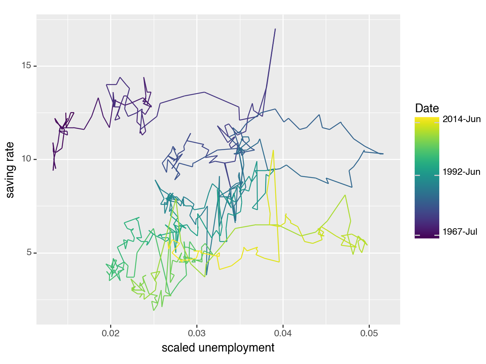

import pandas as pd
import numpy as np
from plotnine import (
ggplot,
aes,
geom_path,
geom_line,
labs,
scale_color_continuous,
element_text,
theme
)
from plotnine.data import economicsgeom_path
geoms.geom_path()
Connected points
Usage
geom_path(mapping=None, data=None, stat='identity', position='identity',
na_rm=False, inherit_aes=True, show_legend=None, raster=False,
linejoin='round', lineend='butt', arrow=None, **kwargs)Only the data and mapping can be positional, the rest must be keyword arguments. **kwargs can be aesthetics (or parameters) used by the stat.
Parameters
| Name | Type | Description | Default | ||||||||||||||||
|---|---|---|---|---|---|---|---|---|---|---|---|---|---|---|---|---|---|---|---|
mapping
|
aes |
Aesthetic mappings created with aes. If specified and :py:inherit.aes=True, it is combined with the default mapping for the plot. You must supply mapping if there is no plot mapping.
|
required |
See Also
plotnine.geoms.arrow: for adding arrowhead(s) to paths.
Examples
Path plots
geom_path() connects the observations in the order in which they appear in the data, this is different from geom_line() which connects observations in order of the variable on the x axis.
economics.head(10) # notice the rows are ordered by date| date | pce | pop | psavert | uempmed | unemploy | |
|---|---|---|---|---|---|---|
| 0 | 1967-07-01 | 507.4 | 198712 | 12.5 | 4.5 | 2944 |
| 1 | 1967-08-01 | 510.5 | 198911 | 12.5 | 4.7 | 2945 |
| 2 | 1967-09-01 | 516.3 | 199113 | 11.7 | 4.6 | 2958 |
| 3 | 1967-10-01 | 512.9 | 199311 | 12.5 | 4.9 | 3143 |
| 4 | 1967-11-01 | 518.1 | 199498 | 12.5 | 4.7 | 3066 |
| 5 | 1967-12-01 | 525.8 | 199657 | 12.1 | 4.8 | 3018 |
| 6 | 1968-01-01 | 531.5 | 199808 | 11.7 | 5.1 | 2878 |
| 7 | 1968-02-01 | 534.2 | 199920 | 12.2 | 4.5 | 3001 |
| 8 | 1968-03-01 | 544.9 | 200056 | 11.6 | 4.1 | 2877 |
| 9 | 1968-04-01 | 544.6 | 200208 | 12.2 | 4.6 | 2709 |
Because the data is in date order geom_path() (in pint) produces the same result as geom_line() (in black):
(
ggplot(economics, aes(x='date', y='unemploy'))
+ geom_line(size=5) # plot geom_line as the first layer
+ geom_path(colour='#ff69b4', # plot a path - colour pink
size=1)
+ labs(x='date', y='unemployment (,000)') # label x & y-axis
)
<Figure Size: (640 x 480)>Plotting unemployment (scaled by population) versus savings rate shows how geom_path() differs from geom_line(). Because geom_path() connects the observations in the order in which they appear in the data, this line is like a “journey through time”:
(
ggplot(economics, aes(x='unemploy/pop', y='psavert'))
+ geom_path() # plot geom path
+ labs(x='scaled unemployment', y='saving rate') # label x & y-axis
)
<Figure Size: (640 x 480)>Comparing geom_line() (black) to geom_path() (pink) shows how these two plots differ in what they can show: geom_path() shows the savings rate has gone down over time, which is not evident with geom_path().
(
ggplot(economics, aes(x='unemploy/pop', y='psavert'))
+ geom_path(colour='#ff69b4', # plot geom_path as the first layer - colour pink
alpha=0.5, # line transparency
size=2.5) # line thickness
+ geom_line() # layer geom_line
+ labs(x='scaled unemployment', y='saving rate') # label x & y-axis
)
<Figure Size: (640 x 480)>The geom_path can be easier to interpret if time is coloured in. First convert time to a number, and use this number to colour the path:
# convert date to a number
economics['date_as_number']=pd.to_numeric(economics['date'])# inspect new column
economics.head()| date | pce | pop | psavert | uempmed | unemploy | date_as_number | |
|---|---|---|---|---|---|---|---|
| 0 | 1967-07-01 | 507.4 | 198712 | 12.5 | 4.5 | 2944 | -79056000000000000 |
| 1 | 1967-08-01 | 510.5 | 198911 | 12.5 | 4.7 | 2945 | -76377600000000000 |
| 2 | 1967-09-01 | 516.3 | 199113 | 11.7 | 4.6 | 2958 | -73699200000000000 |
| 3 | 1967-10-01 | 512.9 | 199311 | 12.5 | 4.9 | 3143 | -71107200000000000 |
| 4 | 1967-11-01 | 518.1 | 199498 | 12.5 | 4.7 | 3066 | -68428800000000000 |
The path is coloured such that it changes with time using the command aes(colour='date_as_number') within geom_path().
# input
legend_breaks=[-79056000000000000, 709948800000000000, 1401580800000000000] # used to modify colour-graded legend
legend_labels=["1967-Jul", "1992-Jun","2014-Jun"]
# plot
(
ggplot(economics, aes(x='unemploy/pop', y='psavert'))
+ geom_path(aes(colour='date_as_number')) # colour geom_path using time variable "date_as_number"
+ labs(x='scaled unemployment', y='saving rate')
+ scale_color_continuous(breaks=legend_breaks, # set legend breaks (where labels will appear)
labels=legend_labels) # set labels on legend
+ theme(legend_title=element_text(text='Date')) # set title of legend
)
<Figure Size: (640 x 480)>Attributes
| Name | Description |
|---|---|
| DEFAULT_AES | dict() -> new empty dictionary |
| DEFAULT_PARAMS | dict() -> new empty dictionary |
| REQUIRED_AES | set() -> new empty set object |
Methods
| Name | Description |
|---|---|
| draw_legend | Draw a horizontal line in the box |
draw_legend
geoms.geom_path.draw_legend(data, da, lyr)
Draw a horizontal line in the box
Parameters
| Name | Type | Description | Default |
|---|---|---|---|
data
|
Series | Data Row | required |
da
|
DrawingArea | Canvas | required |
lyr
|
layer | Layer | required |
Returns
| Type | Description |
|---|---|
| DrawingArea |